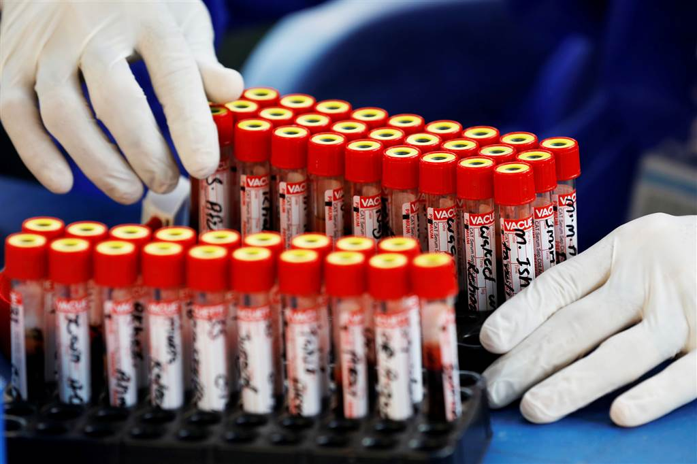
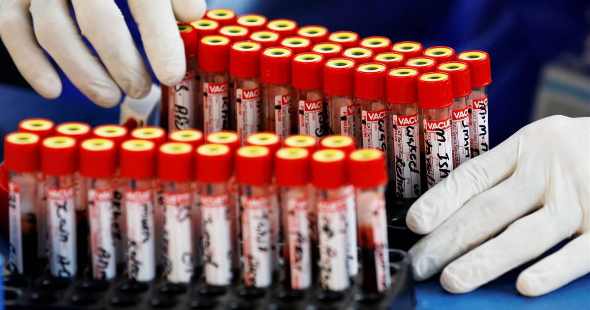
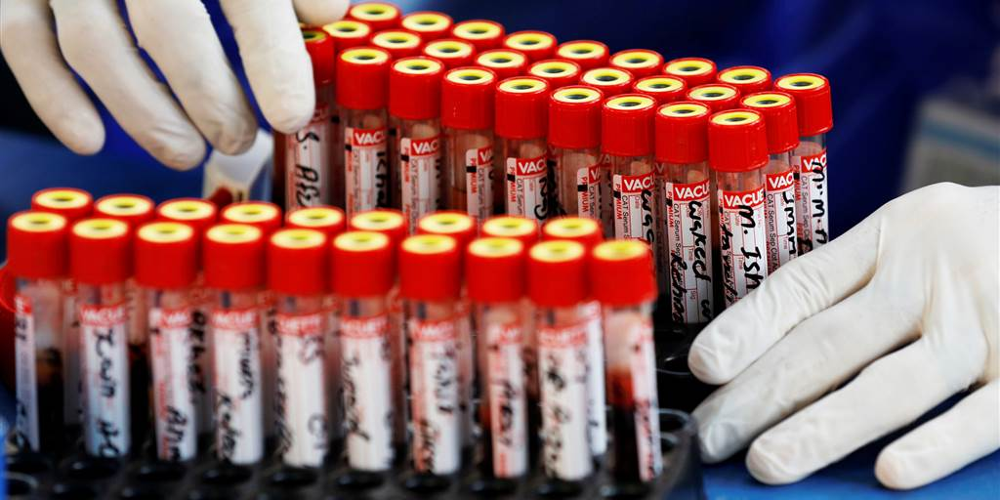
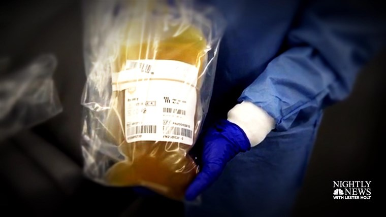

What's your blood type?It may affect your risk for Covid-19
A growing body of evidence suggests that blood type may play a role in the risk of becoming infected with the coronavirus or developing life-threatening complications from the illness.
But it does not mean that any single blood type is more protective or more dangerous regarding Covid-19, and the evidence may indeed raise more questions than answers.
Full coverage of the coronavirus outbreak
Two studies on the topic were published Wednesday in the journal Blood Advances, a publication of the American Society of Hematology.
In the first, researchers in Denmark looked back at data on 473,654 people tested for Covid-19 from February to July.Most results were negative; just 7,422 tests came back positive.
June 25, 202001:47
Blood type, the researchers found, stood out as a potential key difference between the two groups.
'Blood group O is significantly associated with reduced susceptibility to SARS-CoV-2 infection,' the study authors wrote, meaning that people with type O blood seemed to be less likely to become infected.SARS-CoV-2 is the virus that causes Covid-19.
The findings of the study are limited because blood type information was available for just 62 percent of those who were tested.
It is also important to note that people with type O blood can and do become infected.
'The study suggests if you have type O, you have a slightly lower risk,' Dr.Roy Silverstein, chair of medicine at the Medical College of Wisconsin, said.'But it's a small decrease,' he said, adding that blood type does not equate to zero percent risk.Silverstein, who is also a former president of the American Society of Hematology, was not involved with the new studies.
What's more, Silverstein pointed out, the new research will not alter how doctors treat Covid-19 patients.
'They're not going to treat someone who comes into the hospital with type O differently than type A,' he said.'The differences are just not that large.'
Still, a second smaller study also published Wednesday seems to boost those findings.Researchers in Canada looked at data on 95 Covid-19 patients in Vancouver from February to April.All were sick enough to be hospitalized in intensive care units.
Again, researchers found differences in blood types.This time, certain types appeared to be associated with worse outcomes.
'A higher proportion of Covid-19 patients with blood group A or AB required mechanical ventilation and had a longer ICU stay compared with patients with blood group O or B,' the study authors wrote.
Types A and AB were also more likely to need a type of dialysis that helps the kidneys filter blood without too much pressure on the heart.
There are important caveats to consider from the new research.There is zero indication that any blood type is either totally protective or dooms a patient to severe outcomes of Covid-19.
Download the NBC News app for full coverage of the coronavirus outbrea k
Public health officials say that people with any blood type need to take the same mitigation precautions, such as wearing a mask and maintaining physical distancing and effective hand-washing.These studies only suggest an association between blood types and Covid-19 outcome, not cause and effect.
Still, a link between blood type and severity of diseases is not unheard of.People with blood type O, for example, tend to become sicker from cholera than people with other blood types.Cholera is a bacterial infection that affects the small intestine.
Silverstein called the new research 'interesting cocktail party conversation.'
Maybe with further study, he said, 'it could lead to new approaches for prevention or therapy.'
'But at the present time, there is no reason to think that if you have type O blood, you're protected from Covid-19.'
Follow NBC HEALTH on Twitter Facebook.
Posted On: 2020-10-15T01:54:00




Content Date: 2020-10-15
Download Date: 2021-04-08
Document ID: L0C049MXK